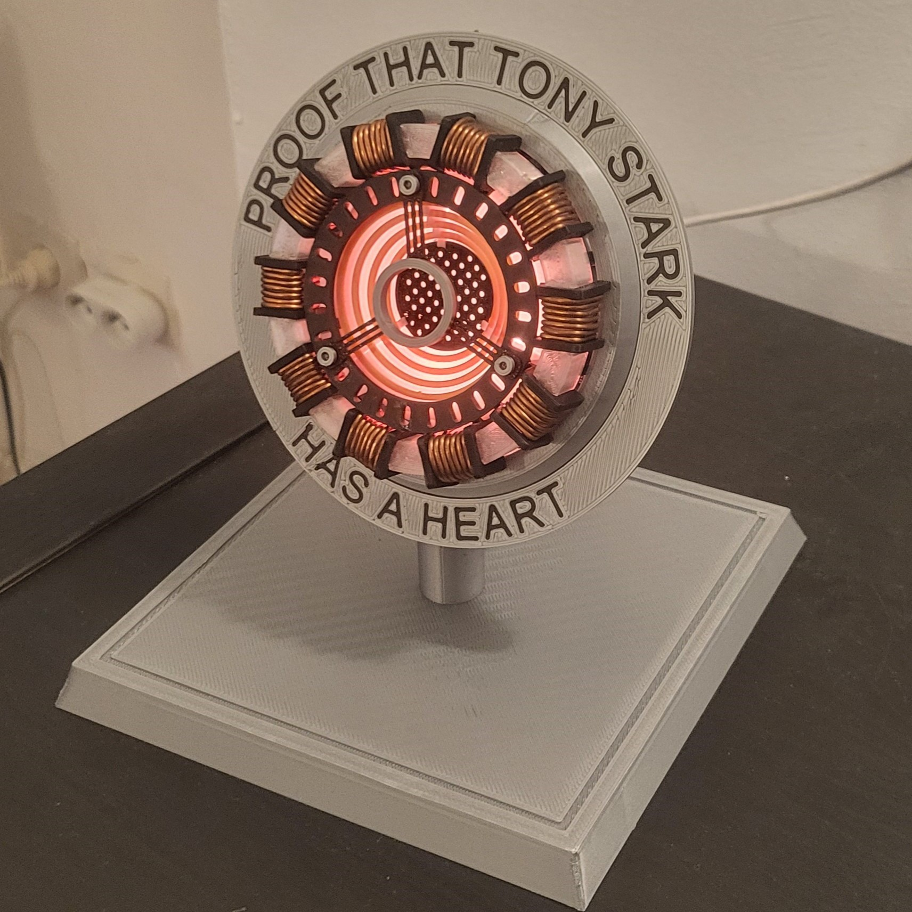

MON PORTFOLIO
Je suis ravi de vous accueillir. Découvrez mes services et mes compétences.

Bouton de micro onde
Une cliente m'a demandé de fabriquer des boutons pour son micro onde ses anciens sont cassés
Voir plus

Le robot suiveur de ligne analogique
Concevoir un robot capable de suivre mais uniquement avec des composants analogiques
Voir plus
Robot suiveur de ligne numérique
Concevoir un robot capable de suivre une ligne et l'inscrire à un concours
Voir plus
Alimentation par panneau photovoltaïque
Fabriquer une PCB capable de recharger un telephone en fonction de la tension d'un panneau photovoltaïque
Voir plus
Système Automatisé
Conception d'un système automatisé pour la gestion de la production dans une usine connectée.
Voir plus